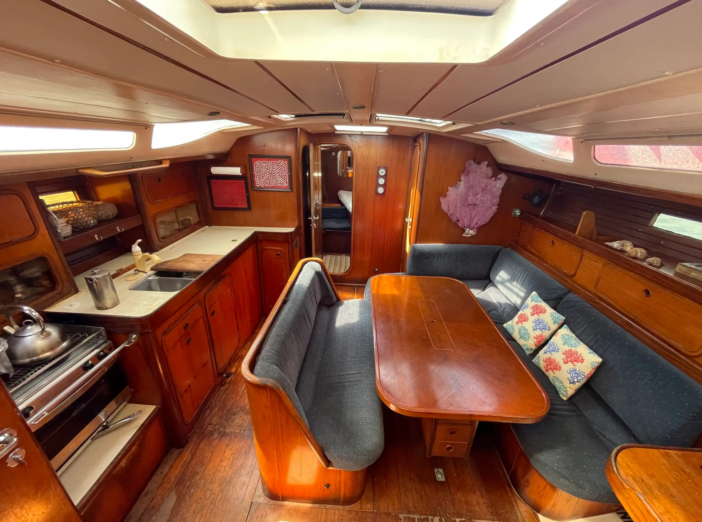
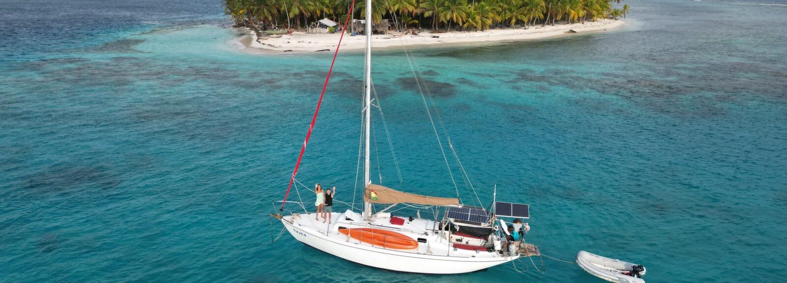
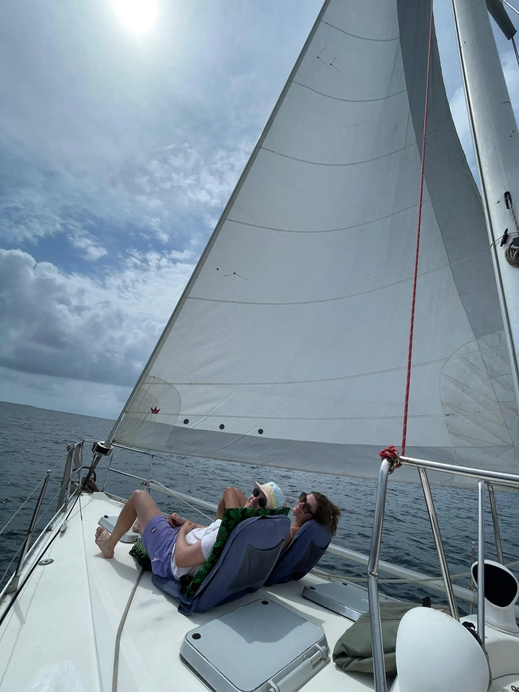
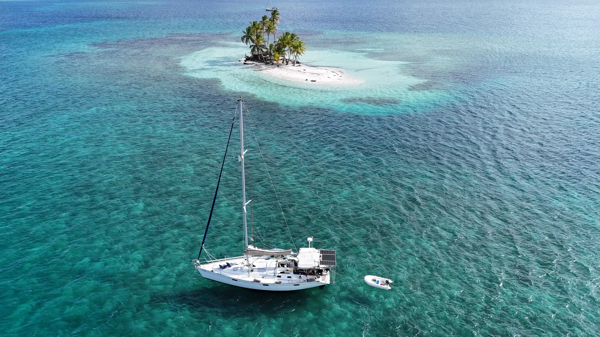
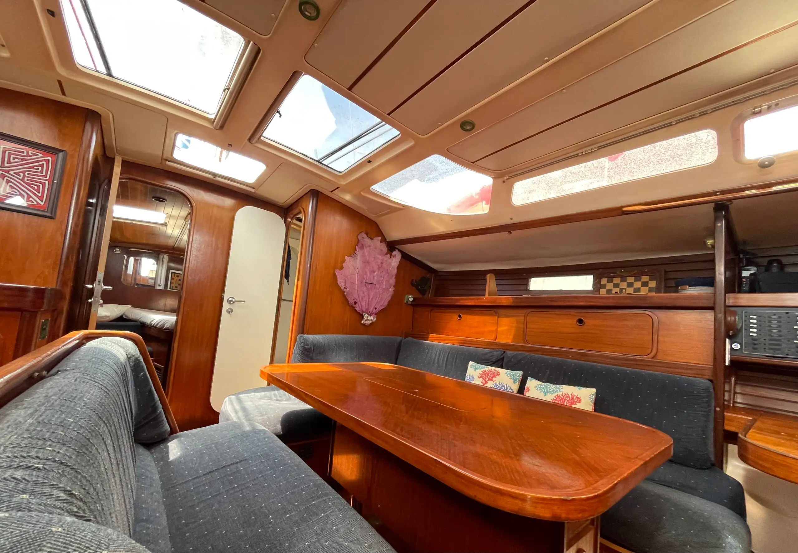
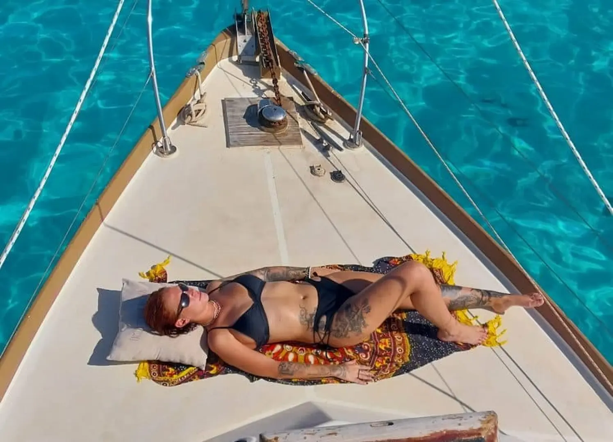
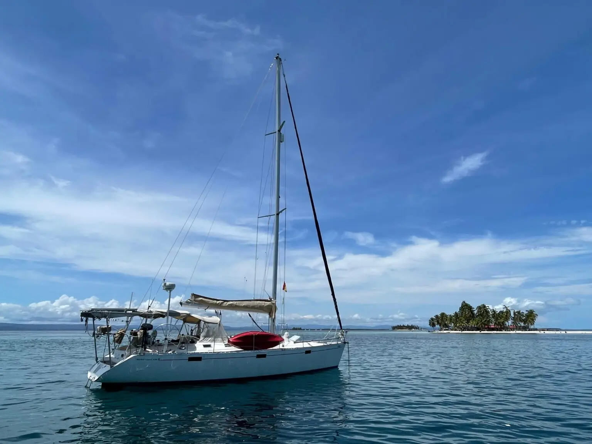

Información Completa del Velero
Tu hogar flotante en San Blas
Lady Lou es un velero de 42 pies, diseñado para aventuras íntimas, combina comodidades modernas con el encanto del mar.
Detalles
- group
Hasta 4 huéspedes · El velero no se comparte con otros huéspedes
- directions_boat Velero privado de 42 pies
- room_serviceCamarotes privados
• 1 camarote privado con baño propio
• 1 camarote doble con baño compartido (tripulación) - check_circleIncluido a bordo
Snorkel en arrecifes de coral (equipo incluido)
• 3 comidas caseras al día
• Jugos naturales frescos
• Kayak y tabla de paddle
• Navegación diaria entre islas
• Tripulación profesional
• Prácticas ecológicas
Galería








